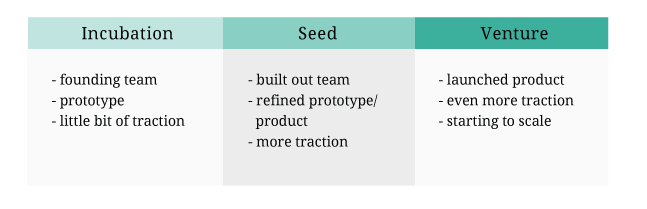

When to Fundraise
When it comes to fundraising, timing is everything. There’s an optimal point in your team and product’s development when it’s best for you to seek funding. At an early stage, the most ideal time for you to fundraise is when you have a solid team, working prototype and some traction.
At the same time, if you have an awesome team with a great track record, you can get away with not building or launching a prototype during the incubation and seed round because investors will be making a bet on you more than anything else. Such talented teams might skip the incubation round altogether and go straight to a seed or venture round, asking for a significant chunk of money before having built anything. The tenets of lean startup would argue, however, that it’s better to stay “lean” and test out your assumptions before committing heavily to investors. In the end, it’s hard to predict the absolute perfect time in your development to fundraise, but here is a quick and simple checklist of what you might need before each fundraising phase:

Note: Remember to incorporate! Incorporation formalizes ownership arrangments, intellectual property (IP), assignments, and allows you to issue stock at low valuations. Some accelerators, like Y combinator, prefer if you do not incorporate. However, you should definitely incorporate before a value is placed on your company, and before you begin the later fundraising stages.
“The very first round of money that anybody raises is a bet on the team. And the first bet that you make on that team is the idea that they have, but they’re also assuming that they can fail at that idea and do another idea. But the second or third round is all about growing the idea because you have traction. So having some reputation from the past means come on let’s get on with the meetings.”
Jeff Veen, Typekit
How Much to Fundraise
You’re ready to fundraise - how much should you go after? There is no ideal amount as it varies company to company. Here are some helpful criteria in setting your amount.
- List out all expenses with an expected and worse case. Know company costs health insurance, payroll tax, etc.
- Add a 30 - 50% buffer to your worse case. This buffer covers unforseen costs.
- Align fundraising goals with projected milestones, that way you ask for money at your best moments. Project funding for 18 months.
Who to Fundraise From
Sources of funding range from (1) yourself, (2) friends and family, (3) crowdfunding (4) accelerators, (5) angels, (6) seed funds to (7) VCs. As noted above, different phases involve different funders.
Yourself
Client work or other jobs may be a way to fund your idea or grow your creative side project into a venture, especially at the very early stages. Other work can act as a safety net of income, and reduces the amount of financial risk you’re taking on. Be warned: working multiple jobs can feel like a large task and lead to burnout. This is also known as “bootstrapping,” entrepreneurs do whatever it takes for their startup to survive, which can includes taking out loans, opening up credit cards and dipping into personal savings to pursue their idea.
Also, if you start your venture while working for another company, look to make sure that there is no overlap between your anticipated business and your employer’s business. Be careful of any agreements you may have signed with your employer, for you do not want another employer own your work.
Designer Tip: You have the skills to freelance.
You have design skills that are usually in high-demand. You can have the flexibility of freelance while testing the waters with entrepreneurship.
Friends and Family
Friends and family are easy to access and tend to be more sympathetic to your needs. The flip side is that they may not be accredited investors, and they’re usually less connected than investors and other mechanisms. You also take the risk of mixing personal with business.
“The first year, we were both basically working for nothing. I went to friends and family and raised a very tiny amount of money, …The first round was like $60,000 or something. It was tiny, tiny, tiny.”
Scott Belsky, Behance
Crowdfunding
A “democratic version” of angel and VC funding, a large number of individual stakeholders can invest in your business.
Equity crowdfunding, a new form of funding for startups, is an exciting development which allows entrepreneurs to use online crowdsourcing to accept investments.
Currently, only accredited investors and angels can legally invest through such platforms. The Securities and Exchange Commission (i.e., U.S government) is still adjusting the regulations so that ordinary people can participate in equity crowdfunding.
A few equity crowdfunding platforms include:
There are also forms of non-equity crowdfunding, specifically platforms such as Kickstarter and Indiegogo. The watch, Pebble, raised $10 million from an estimated 68, 000 people after they had challenges raising venture funding.
Designer Tip: You can communicate ideas visually.
Successful projects on crowdfunding platforms have to communicate their idea in a beautiful and concise manner, usually with solid images and videos. Kickstarter has a strong mission to specifically help fund creatives.
Accelerators
Accelerators typically give incubation funding and help offset a lot of the early stage infrastructure costs like physical office space. They also provide a community of mentors, experts, fellow startups, and access to angel investors and VCs.
Incubators want to get in early on deals. It’s a cheap way for them to get a bunch of equity, across several early stage companies.
They’ll have a standardized process (i.e., pre-set deals) for giving funding and experience in the problems you’ll be facing in getting off the ground.
Designer Tip: Accelerators for Designers
There are accelerators and early stage seed funds that appreciate good design. A few great accelerators and early stage seed funds include:
“Most interesting incubators today are those that say, ‘Look, we’re not trying to pull at you, we're not trying to do anything. We'll give you a little money, we'll give you some infrastructure and help share some knowledge across our experiments, Y Combinator is obviously incredible at this, and we'll just let you on your way.’ I think that the reason they're doing well now is because it's a much more frictionless model.”
John Lilly, Mozilla
Angels
Angel investors are a major source of capital during all phases of fundraising. Some angels were once entrepreneurs, so they understand what you’re going through and want to give back. They’re often aligned with the your incentives and care more about your relationship than huge financial returns. Angels can therefore support an entrepreneur who will take a small exit, whereas VCs are incentivized for larger ones. However, remember that various types of angels, some are familiar with market terms, and others may be new to the startup world.
They can also invest small amounts of money, which is what you need at an early stage, set direct terms, understand the experimental nature of your idea, and make fast investment decisions. While an angel is a general name for pre-institutional money, angels often come in three flavors:
Individuals: These angels are accredited independently wealthy investors, who give you money, in exchange for equity or a convertible note.
Network/groups: They sometimes come together to form networks and groups, to share research and consider deals together. Individual angels within networks still make their own investment decisions.
Funds: Angel funds are groups of investors who pool money to invest together, usually alongside additional investment capital from individual members and limited partners.
Designer Tip: Designer Fund is a network of angels that specifically invests in designer founders.
Seed Funds
We’ve included these funders who aren’t self-identified as accelerators, angels, or VCs, but provide seed and venture funding. Like VCs, these organizations have limited partners but are smaller scale (in the millions versus in the billions) than large VCs. These funds describe themselves as providing funding in between incubation and later stage funding from traditional, bigger VCs. They tend to be major players during the seed round.
Examples of seed funds:
VCs
Venture capital firms (VCs) are institutions which can also participate in all funding phases. There are a few VCs that may invest smaller amounts such as $500,000, though most VCs typically invest over a million.
Designer-friendly VCs: